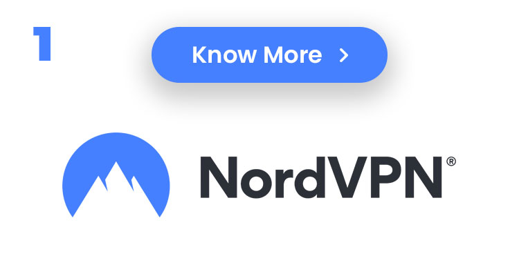
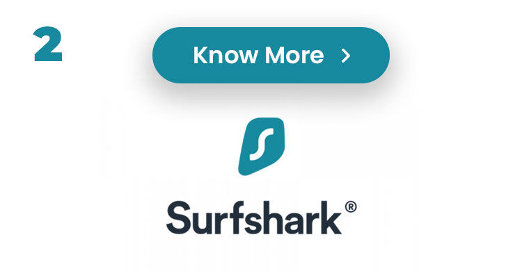
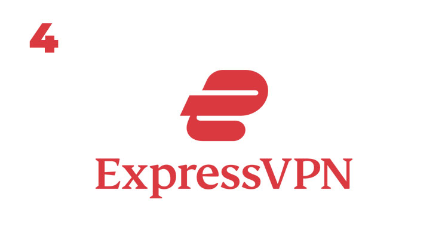
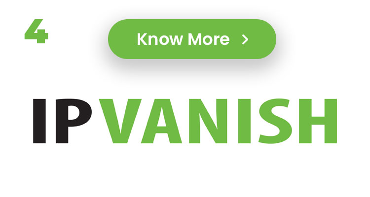
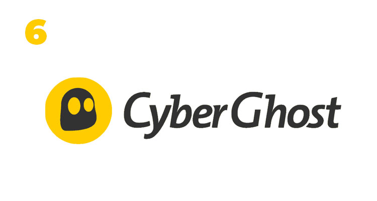
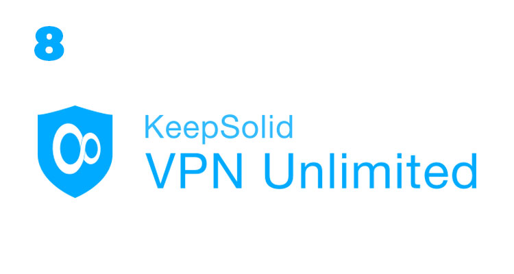
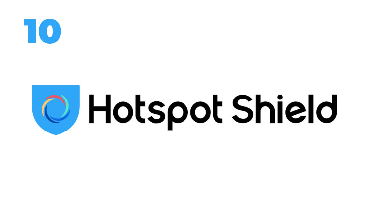
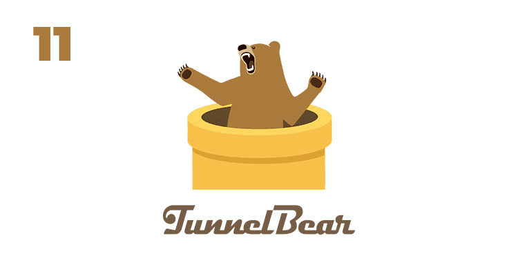
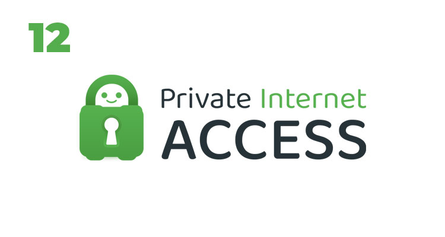

Online privacy and security is becoming increasingly important due to digital theft and hacking, this is why using a VPN is one of the best and secure thing to do when surfing online. That is why seasoned cyber security experts with years of experience were contacted to carefully test and rate the best VPN services to use in 2023, here are the list below
A virtual private network, or VPN, is a service that encrypts your online activities and hides your identity while you browse. VPNs add an extra degree of anonymity, let you access websites in other countries, and can offer safe connections for sending critical data. There are several purposes for VPNs in both personal and professional settings, and there are many different products on the market.To help you pick the finest VPN service for your requirements, we've examined the essential aspects you should take into account.
Virtual private networks, or VPNs, hide your online activities from prying eyes by encrypting your data. A VPN can help you stay anonymous when you do things like check your email, speak with coworkers, and surf the web.
The top VPNs offer high levels of privacy protection without sacrificing speed. We strongly advise utilizing a solid VPN for work, especially if your job requires managing sensitive information, even if some people choose to forgo using one in favor of other kinds of network connections.
Although though they pose a far lower security risk than they did in the past, a VPN can provide you an additional layer of protection when using public Wi-Fi networks. Also, a VPN service enables you to get around content restrictions in some nations so that you can access important news and instructional materials as well as expand your streaming entertainment options. Also, VPNs may be utilized to fix incorrectly implemented league blackouts and regional limitation errors if you enjoy watching live sports.
Let's take a closer look at each of our VPN providers listed below. Expect this list to alter throughout the year as we put each VPN through its paces as we continually update it based on our active testing of VPNs and our examination of the most recent research.For instance, we recently retested our top options for connection speed, and after we have completed analyzing the results, we will update our evaluations.We've compiled a list of our top picks for 2023 so far.
In our most recent testing, we found a few glitches in Nord's killswitch while using its iOS app, which torrenters could find troublesome. On its website, Nord does, however, provide a sideloaded iOS that it suggests consumers use. In our most recent speed testing, NordVPN's performance improved from average speed scores of 2021 and soared back into the list of the fastest VPNs we've tested, with just a 13% loss in base internet speeds.
One of the most well-known names in the VPN industry is NordVPN. In contrast to practically all other providers, it provides six simultaneous connections across its network, which is a generous simultaneous connection count. For those seeking a stronger VPN connection, NordVPN additionally provides a dedicated IP option and the option to connect over Tor. The majority of Nord's 5,000+ servers are set up for peer-to-peer sharing, however the company has restricted torrenting in 14 nations.
PayPal is not accepted by NordVPN, however you may subscribe with any significant credit or debit card, AmazonPay, Google Pay, or ACH transfer. You may use a number of cryptocurrencies, such as Bitcoin, Ethereum, Tether, and Dogecoin, to make an anonymous payment. However, NordVPN has collaborated with a few physical retailers, like Staples, BestBuy, and Walmart, where you can even pay cash for your VPN.
Some of the more significant Surfshark features include split-tunneling, NoBorders mode, camouflage mode (which masks the fact that you're using a VPN), and multihop VPN connections. These capabilities are in addition to traditional VPN features like a kill switch and DNS leak prevention. Also, you'll have access to Surfshark's CleanWeb technology, which guards against phishing scams and prevents advertisements and viruses.
The Nexus network, which joins the VPN's whole network of servers and lets you select different servers to route your connection via, is one advancement we're eager to see Surfshark provide over the course of the upcoming year. Although Tor's functionality is fairly comparable, Surfshark claims to be quicker. The Nexus network may provide you with a few more levels of security when you use the VPN thanks to its Dynamic MultiHop, IP Randomizer, and IP Rotator functionalities. This can be very useful for users with important privacy requirements.
Surfshark has a robust set of privacy and security protections, a vast global network, limitless simultaneous connections, and an intuitive user interface. Yet it's still far less expensive than the majority of its rivals. Surfshark received CNET's Editors' Choice for Best Value VPN in 2022 as a result of this.
According to Surfshark, no user activity is logged. Despite the fact that it is nearly difficult to show with absolute confidence that no data is logged, German cybersecurity company Cure53 rated Surfshark's security as "solid" in its 2021 VPN security audit. In January, Surfshark passed its initial independent no-logs assessment.
Tesonet, the parent company of both Surfshark and NordVPN since February 2022, is required by law, according to Surfshark, to refrain from sharing any information that would violate either company's terms of service or privacy policy. No wording that would suggest Surfshark has any responsibility to share user information with its parent firm or any of its siblings, which includes NordVPN, could be found in either document.
One of the fastest VPNs on the market is routinely rated as Surfshark. Hence, we were taken aback when one of the few problems we encountered with Surfshark occurred during our speed test. With a 19% reduction in internet speed, it remains one of the fastest VPNs we've tested, but we were dissatisfied with the variable performance results we received in some areas.
In our tests, Surfshark was able to unblock Netflix and Amazon Prime Video material without any issues, although we experienced some difficulty using Disney Plus. We tried many servers in the US and other countries where Disney Plus is accessible before connecting to a server in Boston, where we were able to view the material. To use Surfshark to access Disney Plus material, you might need to test a few servers first.
Initiation fees at Surfshark are lower but increase after the first billing cycle. Still, Surfshark keeps its costs cheaper than the majority of other VPNs, which helped it win CNET's Editors' Choice for Best Value.

Although Proton VPN hasn't been around as long as some of its competitors, like as ExpressVPN and NordVPN, it has built a solid reputation for security and openness in only a few short years. A large portion of that reputation was created thanks to Proton Mail's existing strong track record as a secure email service, but since its 2017 introduction, Proton VPN has developed into a reliable product on its own merits.
Proton VPN is the only provider in our top five whose software's source code is openly available for anybody to examine, and all of its apps across platforms are totally open-source. Third-party cybersecurity experts who regularly analyze the applications confirmed that "no serious security concerns were detected" in their most recent evaluation.
Proton VPN is a good option for VPN power users and anybody with a serious need for security, but it's also great for casual VPN users who only want to increase their online privacy or view stuff that's blocked in their area. It can unblock streaming services like Netflix, Disney Plus, HBO Max, and Amazon Prime Video and is quick and simple to use across all platforms.
A kill switch, DNS leak prevention, and AES 256-bit encryption are just a few of the usual security features that Proton VPN has to offer. Also, the service provider includes extra security safeguards including an ad/malware blocker, Tor over VPN, and a stealth protocol to assist in hiding your VPN connection and getting through firewalls.
Moreover, Proton VPN is the only free VPN we've seen that's actually worthwhile to use, with an unlimited free tier that is genuinely outstanding. Proton VPN's free tier is safe and doesn't impose restrictions on speed, bandwidth, or use time like most other free VPNs do, albeit it lacks torrenting compatibility and doesn't have all the bells and whistles of the commercial tiers. Free users can connect one device at a time and have access to servers in the US, Netherlands, and Japan.
The fleet of Secure Core servers at Proton VPN, however, is the security suite's crowning achievement. Proton's Secure Core servers are fully owned by the company, equipped with hard disk encryption, and located in secure data centers in an abandoned military base in Iceland, as well as in underground bunkers in Switzerland and Sweden. In essence, these servers function in the same way as other VPN providers' multi-hop functionality does. When leaving through a separate VPN server in a different country, route your traffic through Proton's Secure Core servers first to offer a strong layer of physical and technological security.
In the previous year, ExpressVPN raised the number of independent third-party audits, revealed information on the deployment of its TrustedServer, joined the i2Coalition to demand enhanced ethics in the VPN sector, and launched an open source Lightway encryption protocol.
The fastest VPN we've tested right now is ExpressVPN, which reduced our internet speeds by less than 2%. Its iOS and Android applications are made with a minimalist design that aims to connect users quickly and painlessly. On its main page, there is just one button that instructs you to connect quickly, and the only other choice is a drop-down server location selection that has your quickest neighboring city already picked by default.
The other of ExpressVPN's features, including its account and settings choices, security and privacy tools, and support page, are all conveniently hidden beneath a standard three-bar icon in the top left corner of the screen. These are also worth looking into. A password generator, two leak tests, and an IP address checker are all built into ExpressVPN.
All of our top-rated VPNs are very compatible with a variety of devices and operating systems, but ExpressVPN has a distinct advantage over the competition thanks to its setup manuals, comprehensive FAQs, and troubleshooting articles. Moreover, it offers a 30-day, no-questions-asked money return guarantee and 24-hour customer service.
Since its founding in 2009, ExpressVPN has grown to have a sizable network of over 3,000 RAM-only servers dispersed over 160 sites in 94 countries. At $100 a year, ExpressVPN's top subscription provides five simultaneous connections (which includes three extra months, for a limited-time deal totaling 15 months of service). Also, you have the choice of a $13 monthly plan or a $60 six-month payment.
Get it here. IPVanish is a good choice if you're seeking for the capacity to fine-tune your VPN connection. IPVanish is a program for the meticulous tech tweaker who appreciates having fine control over their mobile internet traffic, with a variety of controls managing things like the kill switch, split tunneling, VPN protocol, and LAN connection allowance.
The user-friendly interface of IPVanish is a big plus; it makes it the perfect client for anyone curious about how a VPN works from the inside out.
As it has long been designed with peer-to-peer traffic in mind, IPVanish is a great option for torrenters searching for a VPN that includes a SOCKS5 proxy.
Its multiplatform adaptability is also perfect for anyone trying to locate a VPN that works with Netflix. While not being the fastest VPN, IPVanish's 58% speed loss in our most recent speed testing is comparable to that of the majority of VPN services. Nevertheless, we discovered that IPVanish's Fast Connect feature doesn't always connect you to the best server that is available, so you might need to manually connect to a server with a lesser load by choosing the Locations option in the client in order to maximize your speeds.
IPVanish wants to steer you away from its monthly plan, which costs $11, and toward its annual program, which costs $48 for the first year and then increases to $90 for additional years of service. The company gives a 30-day money-back guarantee, but only if you buy the annual plan. This may upset customers who bought a monthly membership but afterwards changed their minds.
Yet, the business deserves praise for enabling an unrestricted number of concurrent connections. We also appreciated that it had a connection kill-switch option, which is essential for anyone who is concerned about safeguarding their online anonymity.
Maybe the most VPN servers are accessible with CyberGhost VPN. That by itself isn't a sign of quality, but when combined with its extensive network of server locations spread across 90 nations, CyberGhost VPN emerges as a serious option for anybody in need of VPN coverage all over the world. Yet, it falls short of being the total package because it lacks multi-hop connections and the business hasn't yet made the results of an independent audit public.
No matter where you go, CyberGhost VPN provides you the highest chance of finding a nearby VPN server thanks to its extensive network of server locations. It also offers a wide range of options for hiding your location. While its yearly fee is lower than the majority of the competitors, its monthly membership rate is greater than the average we've observed.
No matter where you go, CyberGhost VPN provides you the highest chance of finding a nearby VPN server thanks to its extensive network of server locations. It also offers a wide range of options for hiding your location. While its yearly fee is lower than the majority of the competitors, its monthly membership rate is greater than the average we've observed.
The anonymous VPN package, which has more than enough capabilities to keep you safe for daily use, is what we focused on the most. At $59.99 for the first year, it also happens to be the most affordable option. The least expensive direct IP address to appear on our list of the top VPNs is available as an add-on for $3.99 per month. Eight connected devices can use the base tier's unlimited bandwidth. Devices running macOS, Windows, Linux, iOS, and Android can all use TorGuard. Although manual setup is required, platforms including the Kindle, PlayStation, Xbox, and Chromebook are also compatible.
TorGuard is perfect for foreign travelers who want to protect their privacy and use the internet without restrictions even when they are away from their places since it has strong security features that are also powerful enough to breach firewalls. Importantly, TorGuard's Stealth protocol and Stealth proxy work together to circumvent firewalls in nations with oppressive internet regulations like China, Russia, India, and Turkey.
VPN Unlimited, also known as KeepSolid, is a New York-based VPN service provider that was chosen for the list because of its versatility across platforms—offering separate apps for different devices—positive user experience (UX), ability to upgrade to a dedicated IP, and a subscription plan designed for businesses.While it checks all those boxes, a deeper examination reveals what keeps it from being truly outstanding.But compared to its rivals, the $59.99 regular yearly plan is on the pricey side and includes five device "slots."
competitors and necessitates allocating each device to a certain slot. Regardless of whether the device is actively connected to the VPN, it will take up a slot. For $7.49 a month, you may unlock more device slots. You will need to pay $12.49 per month for a dedicated IP. For five users or fewer, the business plan upgrade starts at $19.99 per month. Even if some of the fine print gives you pause, VPN Unlimited offers a seven-day free trial and a 30-day money-back guarantee, so it's worth a try.
We take your online anonymity extremely seriously and work to protect your online identity. Your sensitive data is fiercely protected by the top-tier AES-256 encryption used by KeepSolid VPN Unlimited. Now that no one cybercriminal can sneak up to your personal information, you may browse the web without worrying. We never link your online activity to your account, email, device, or IP address thanks to our no-logs VPN policy.

One of the finest free VPNs available is Windscribe, and the commercial version isn't bad either. Free VPNs are typically not an option because of their lack of functionality and problems with tracking users for advertising purposes, however Windscribe provides a strong and practical free choice without compromising security or privacy. The free version has bandwidth and connectable location restrictions, but for a few bucks a month, you can add more locations and data.
The annual upfront fee for the entry-level paid tier is $49.It provides access to servers in as many as 69 nations. The limitless number of devices that may be connected at once is what makes the base tier unique. Also included is R.O.B.E.R.T., a configurable ad-, malware-, and tracker-blocking tool. Although Windscribe lacks dedicated IP addresses, it nonetheless provides static IP addresses from 13 different places.
Of all the VPNs we looked at, Hotspot Shield has by far the most user reviews and consistently receives positive customer evaluations on Trustpilot and other app stores.Hotspot Shield has a sizable user following because to its strong streaming capabilities and reliable free plan. Strict restrictions on the free edition include a single device slot, throttled connection speeds, and a daily data cap of 500MB.Be prepared to pay if you want those restrictions removed.The paid plan costs $95.99 a year, but there's a good reason for that.
Premium customers get access to Hotspot Shield's spam call filter, a password manager, and antivirus protection, as well as the ability to connect five devices concurrently, including routers. Five accounts for colleagues or workers, each of whom can connect five devices at once, are included in a "family plan" for an extra $4 per month.An option for a dedicated IP address does not exist.But, Pango, the organization that created Hotspot Shield, provides unique commercial VPN solutions via Twingate.
With its amusingly themed bear interface, vibrant colors, and constrained function list, TunnelBear VPN is simple to disregard. It lacks a lot of the power featured in our top picks. But that does a terrible disservice to TunnelBear VPN. This VPN is a fantastic alternative for anyone who is not experienced with VPNs because it is very simple to use and offers a limited free membership option.Also, TunnelBear VPN has one of the most open audit procedures in the sector, giving it a brand you can rely on.
Because to its straightforward and approachable user interface, TunnelBear VPN is a fantastic option for anybody new to VPNs. It's a good choice as well for those who don't want to mess with network settings and just need a general-purpose VPN.
Before, Private Internet Access was well-known for its appalling user interface and dirt-cheap prices. These statements are no longer true, for better or worse. The sleek UI of Private Internet Access now allows you to personalize the user experience. Its monthly membership fee has also grown dramatically, although only little compared to the average of all the goods we've reviewed.
Further privacy-enhancing technologies like multi-hop connections are available. Here, the user-customizable interface comes into play, allowing you to quickly access complex options or hide them from view.